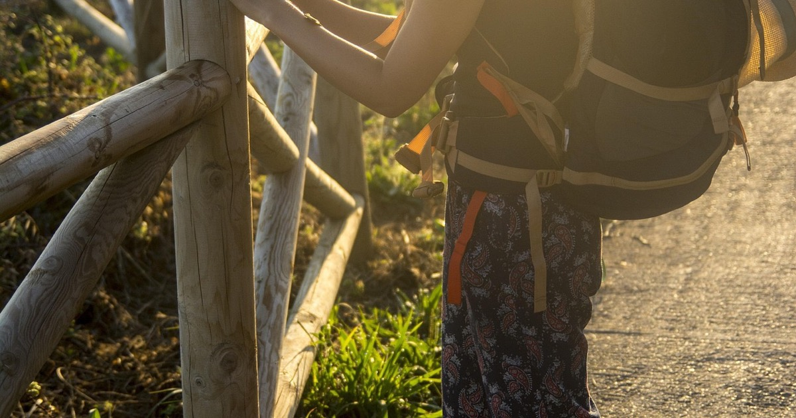

Sara · Easy Camino Santiago
Your Camino by Bicycle expert
Free call back?
Leave your number and we'll call you within 24h to advise you with no obligation.
Your number will only be used to call you. No spam.
Your Camino by Bicycle expert
Leave your number and we'll call you within 24h to advise you with no obligation.
Your number will only be used to call you. No spam.

200km minimum for the Cyclist Compostela. 3 days from Sarria or 5–6 days from Ponferrada. From €349 · With or without bike rental · No heavy panniers.
Freedom, speed and the Galician landscapes — a completely different experience.
Cycling the Camino de Santiago is a completely different experience from walking it. The landscapes change faster, you cover more kilometres in fewer days, and the feeling of freedom on the bike along the Galician paths is hard to describe. For many cyclists, the Camino by bike is the trip of a lifetime.
The Pilgrim Office requires a minimum of 200km by bicycle to issue the Cyclist Compostela. The most popular starting point is Sarria (exactly 200km from Santiago along the French Way), although many cyclists prefer to start in Ponferrada (310km) to also enjoy the spectacular landscapes of El Bierzo and O Cebreiro. From Lugo, our home town, we can organise the transfer to either starting point.
The French Way by bicycle follows much the same paths as pilgrims on foot, with dirt tracks and forest trails — we recommend a mountain or gravel bike, not a road bike. The cumulative elevation is considerable, especially on the climb to Alto do Poio between Triacastela and O Cebreiro, but it is well within reach of anyone with a reasonable level of fitness and prior training.
Minimum 200km by bicycle. Starting from Sarria covers exactly this distance along the French Way.
Bring your own bike or rent an MTB or gravel bike from us, including helmet, lights and basic repair kit.
Pedal-assist e-bikes are allowed and qualify for the Cyclist Compostela. Ask us about e-bike rental availability.
The minimum route. 200km in 3 cycling days — perfect for those with limited time who want the full Cyclist Compostela.
310km through El Bierzo, O Cebreiro and the whole Galician Camino. A fuller cycling adventure.
Your luggage is transferred every day to the next accommodation. Ride light and enjoy the Camino.
The minimum route for the Cyclist Compostela. 200km in 3 cycling days along the Galician French Way.
A long but beautiful day. From Sarria the Camino winds past Galician hills with spectacular views. You pass through Portomarín — with its reservoir and Romanesque church relocated stone by stone — before reaching Palas de Rei. Mixed terrain: dirt track, tarmac and some stone path sections.
The gentlest stage of the cycling route. The Camino passes through Melide — stopping for pulpo a feira is compulsory — and continues on to Arzúa, the cheese capital of Galicia. Rolling terrain, less elevation than the previous day. O Pedrouzo marks the start of the final push to Santiago.
The arrival. A short and emotional stage: the last 20km of the Camino. The Monte do Gozo forest, the first glimpse of the Cathedral towers, and the triumphant entry along the Rúa do Franco to the Plaza del Obradoiro. The embrace of the Apostle and a well-earned Cyclist Compostela.
💡 Start from Ponferrada (5–6 days): 310km crossing El Bierzo, the spectacular climb to O Cebreiro (1,300m), Lugo — our home town — and the whole Galician Camino. Get in touch and we'll prepare a tailor-made itinerary for you.
Everything organised so you only have to think about pedalling.
✓ Prices from Sarria (3 days) · ✓ Ask about packages from Ponferrada (5–6 days) · ✓ Prices per person based on double occupancy. VAT included.
📅 Book with just 20%. Balance due before the trip starts. See cancellation terms.
Everything you need to complete the Camino by bicycle without worries.
Quality MTB or gravel bike, serviced before the trip, with helmet, lights and a basic repair kit. Bring your own or rent from us.
Hostels and guesthouses with washing areas and secure bicycle storage at each stage. Personally vetted by our team.
We collect your panniers and luggage every morning and deliver them to the next accommodation, so you ride light.
GPX track of the French Way by bicycle, optimised to avoid sections that are impractical by bike.
The specific pilgrim passport for cyclists, to stamp at each stage and obtain the Cyclist Compostela in Santiago.
If you have an unrepairable puncture, a mechanical problem or any unexpected issue — call us. We're there.
Not included: Flights/transport to Sarria or Ponferrada, meals (except where noted). Transport from Lugo to the starting point can be arranged by us. Ask about Ponferrada (5–6 day) packages.
Everything you need to know before cycling the Camino de Santiago
3 days, 200km, a Cyclist Compostela. Tell us whether you're bringing your own bike or need a rental and Sara will call you within 24h.
Request free quote →Or call us directly: 982 907 629